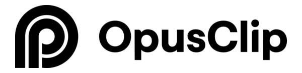
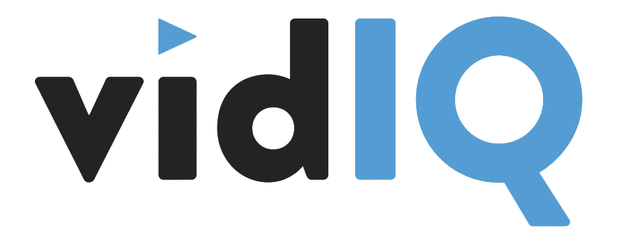
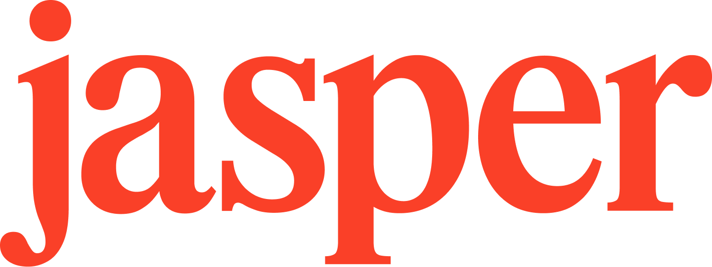
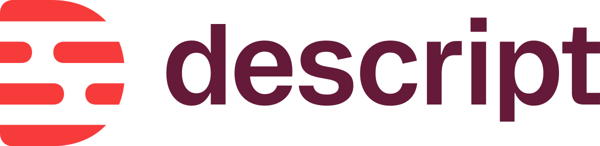

We tested and researched the AI tools creators actually use — clipping, SEO, scripting, editing, voice and thumbnails — to find the ones worth your money. Here are our picks, honestly ranked.
For most YouTubers in 2026, the core AI stack is:
There are hundreds of AI tools aimed at creators, and most of them are noise. We focused on the ones that solve a real bottleneck in a YouTube workflow — and we're upfront when the best option is a free tool we don't earn a commission from. Every pick below is scored on output quality, speed, price and learning curve, and cross-checked against public sentiment from G2, Trustpilot and Reddit.

OpusClip turns long videos into short, captioned clips and ranks them by a virality score. For any YouTuber sitting on long-form content who wants a steady Shorts pipeline without hiring an editor, it's the fastest route there — you just add a quick polish before posting.
Also consider: Pictory (better for turning scripts/blogs into full videos) and Vidyo.ai (cheaper entry). See OpusClip vs Vidyo.ai →

vidIQ has the best keyword and competitor research in the category, plus AI Daily Ideas for what to film next. It's the pick for search-driven channels — tutorials, how-tos, reviews and explainers — though its AI Coach can feel generic and credits drain quickly.
Also consider: TubeBuddy — cheaper, with A/B testing and bulk tools vidIQ lacks. See vidIQ vs TubeBuddy →

Jasper is a polished AI writer with templates for hooks, scripts and titles, and brand-voice controls that keep output consistent. It's the most creator-friendly paid option — though for many, a free ChatGPT or Claude subscription covers scripting just as well.
For a lot of creators, a free ChatGPT or Claude account handles scripting perfectly well — no affiliate link, but it's the truth. Reach for a paid tool like Jasper only if you want creator-specific templates and brand-voice memory.

Descript lets you edit video by editing text — delete a word, delete the footage. Add AI filler-word removal, studio sound and a screen recorder, and it's the most beginner-friendly editor for talking-head and tutorial channels.
ElevenLabs produces the most natural AI voices available, plus dubbing that can take your channel multilingual. Ideal for faceless channels, voiceover work, or reaching audiences in other languages without re-recording.
Also consider: Murf AI — 2-year recurring value and a big voice library. See ElevenLabs vs Murf →
Canva remains the most practical thumbnail tool for creators — templates, background removal, AI image generation and text effects, mostly usable on the free plan. It's not a pure "AI tool," but it's what most YouTubers actually use, so we're not going to pretend otherwise.
We don't currently earn from Canva, and its affiliate program is often closed to new sites — but it's genuinely the best answer here, so it stays our pick. A review site that only recommends what pays it isn't worth reading.
| Tool | Best for | Our score | From | Free plan | Review |
|---|---|---|---|---|---|
| OpusClip | Clipping / Shorts | ★★★★½ | $15/mo | Yes | Read → |
| vidIQ | SEO & keywords | ★★★★☆ | $16.58/mo | Yes | Read → |
| TubeBuddy | Optimisation / A/B | ★★★★☆ | $4.99/mo | Yes | Read → |
| Jasper | Scripting | ★★★★☆ | $49/mo | Trial | Read → |
| Descript | Editing | ★★★★½ | $16/mo | Yes | Read → |
| ElevenLabs | Voice / dubbing | ★★★★½ | $5/mo | Yes | Read → |
| Canva | Thumbnails | ★★★★½ | Free | Yes | See → |
Prices checked August 2026 and change often — confirm on each tool's site before buying. Scores reflect our testing plus aggregated public sentiment.